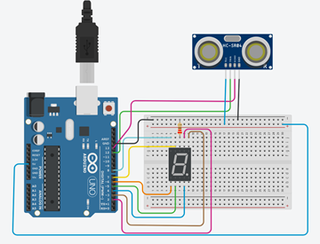
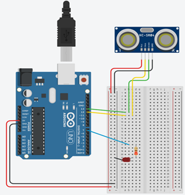
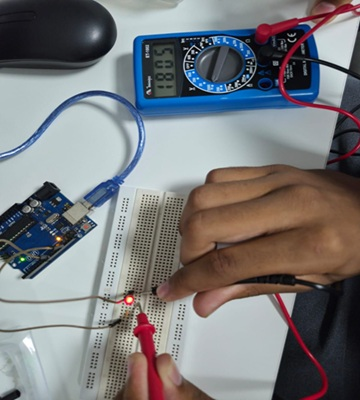
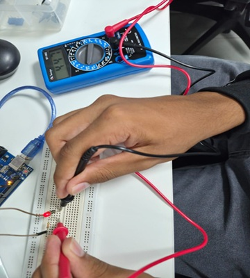
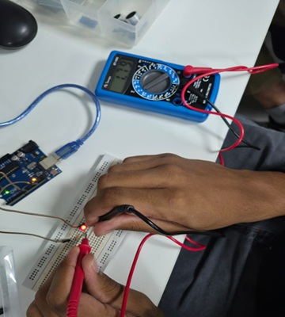
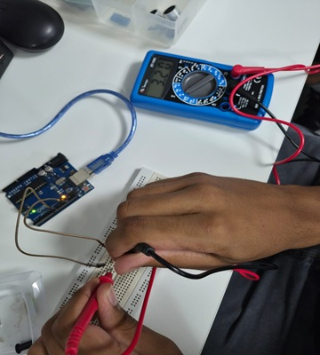
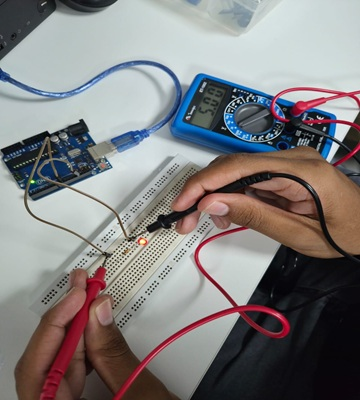

Sete Segmentos com Sensor Ultrassônico

Sensor Ultrassônico com LED

Medida do LED em miliVolts com o AnalogWrite
Medida do LED com analogWrite(255)

O resultado foi de: 1805mV
Medida do LED com analogWrite(127)

O resultado foi de: 900mV
Medida do LED com analogWrite(63)

O resultado foi de: 447mV
Medidas em volts do LED, Resistor e das fontes GND e VCC
Medida do LED

Medida do Resistor

Medida da fonte de alimentação(GND/VCC)

Chegamos a conclusão que:
- LED: Equivale a 1.79V
- Resistor: Equivale a 3.2V
- GND e VCC: Equivale a 5V.
A soma do LED com o Resistor dá 4.99V, basicamente 5V. As vezes a soma pode não dar 5V pois a tensão sempre pode variar.